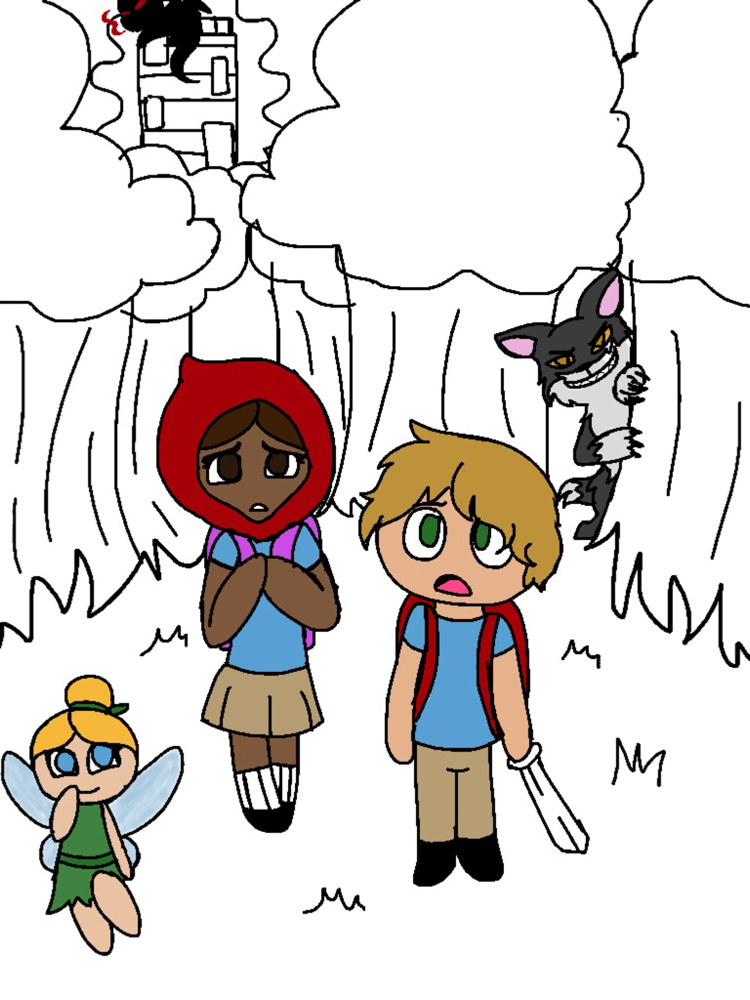

These two animations are not a part of a big project. They are more like "practice" animations.
For this animation, I wanted to create a backstory for one of the characters that I've created. As of now, I am unsure if I want to complete this and make it an actual animation, or if this would just be another one of my test animations.

This drawing was my entry for a contest my school hosted. You see, we have a Winter Concert, and we create programs to hand out to all the friends and family that come to the performance. The contest winner's picture is put on the program. On the left, we have a WIP of it. On the right, we have the final product.